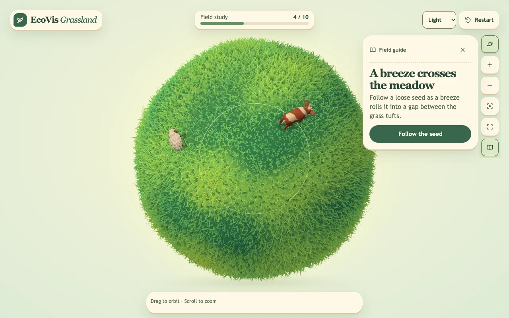
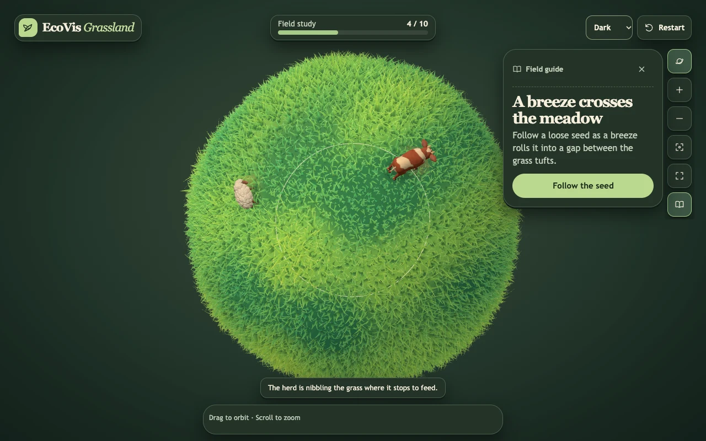

Type sizes use rem. The pixel values assume a root font size of 16 px.
Spacing, corners, and shadows
Use 4, 8, 12, or 16 px between nearby elements and 24, 32, 48, or 64 px between sections.
48121624324864
8 px12 px16 px24 pxPill
Panel shadowOverlay shadow
Interactive components
These examples share their styles with the game. Try the controls to see their different states.
Buttons
Highlight one primary action per task. Use an outlined button for the secondary action.
Input and timeline
Task card and progress
Show the current goal first, followed by the readings and the next action.
Field guide6 / 10
Follow the sea buckthorn
Drag the timeline to see how the grass changes beneath the canopy.
Modal and toast
Use a modal to confirm an action or show details. A toast briefly reports the result while the rest of the page stays interactive.
Observation recorded.
Layout and accessibility
Keep the scene in view and place tasks, tools, and feedback where players can find them.
Responsive grid
Mobile · 740 px and below
Four columns, with each component example spanning the grid. In the game, the toolbar sits at the bottom and the task card on the right.
Tablet · 741–1023 px
Eight columns with two example cards per row. In the game, panels leave more room to interact with the scene.
Desktop · 1024 px and above
Twelve columns with a two-column content layout. In the game, frequently used controls sit around the scene.
The design system uses 4, 8, and 12 columns. The game results page switches to one column at widths of 760 px and below. Respect the device safe area and keep controls at least 12 px from the screen edges.
Accessibility
Contrast
Aim for 4.5:1 for regular text and 3:1 for large text and essential control boundaries.
Target size
Give primary buttons, icon buttons, and the theme selector a target of at least 44 × 44 CSS pixels.
Text scaling
Use rem units and layouts that wrap so the interface stays usable at 200% text size.
Keyboard and motion
Keep keyboard focus visible. Esc closes the modal and returns focus to the button that opened it. Respect system color and reduced-motion preferences.
Cream paper, moss green, and clay textures. The dark theme pairs deep pine green with warm text and keeps the colors that distinguish grass, soil, and species.

Light · Daytime meadow

Dark · Nighttime meadow
Use a calm, specific voice that invites players to notice changes. “Drag the timeline to see how the grass recovers.”